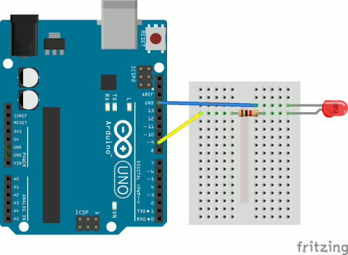

We're going to learn how to make an LED gradually fade on and
off. We'll actually use two different methods. It's important for
you to realize that there is almost always more than one way to
solve a problem in computer science. Usually one of them is
optimal, but not always.
Get your supplies and take out only the Arduino and the USB
cable. Connect your Arduino to your laptop, open the Arduino IDE,
and make sure the correct port is selected.
Raise your hand and have Mr. Olinda verify this checkpoint.
The first program uses the for statement. This type of statement is usually used to run the code inside repeatedly until the test condition is no longer true. Open a new sketch and delete the comments. Then add code to activate the serial connection when the Arduino turns on and set pin 9 to output. Then save the program as forFade. Add and commit your code to version control.
Raise your hand and have Mr. Olinda verify this checkpoint.
Then add two for statements inside the void loop() section. A for statement consists of:
for (initialize; test; increment/decrement) {
}
The initialization happens once, the test happens each time through the loop, and the increment or decrement is executed if the test is true. The loop stops as soon as the test is false. The first for statement will gradually increase the brightness of the LED to the maximum value of 255, and the second will decrease the brightness of the LED to the minimum value of 0.
The initialization of the first for statement is:
int lightValue = 0
The test for the first for statement is:
lightValue <= 255
The loop increments the value of lightValue once each time:
lightValue++
Replace the placeholders with the code above. Once these are inserted, you're ready to add code inside the for statement that will run each time. First, you need to send the lightValue to pin 9, but instead of using digitalWrite, you will use analogWrite. The first is binary: either on or off. The second has a range of values from 0 to 255. It looks like:
analogWrite(pin, value)
Only some of the pins support analog output. Use analogWrite
to send lightValue to pin 9. Then add code to output lightValue
to the serial monitor as well. Then add a ten millisecond delay at
the end of the loop.
Look at your board and identify the symbol that tells you which
ones support analog.
Raise your hand and have Mr. Olinda verify this checkpoint.
Raise your hand and have Mr. Olinda verify this checkpoint.
Set up your Arduino so that it is connected to the red external LED with a 1K resistor between the Arduino and the LED. Make sure your LED is wired into the right pin. Then upload your code and test it. You should see the light gradually increase and decrease in brightness. Confirm this with the serial monitor. If you're successful, then format, save, add, and commit your code.

Raise your hand and have Mr. Olinda verify this checkpoint.
Open a new sketch and delete the comments. This time we're going to use the if statement and we will need only one loop instead of two. First, set two variables at the very beginning of the program, before the void setup() function:
int lightValue = 0;
int delta = 1;
We are setting the initial value of lightValue to 0 and
the value of delta (which means change) to 1. Then, add
code to set pin 9 to output and activate the serial connection.
Save the program as ifFade and then add and commit it to
version control.
Raise your hand and have Mr. Olinda verify this checkpoint.
Now, in the void loop() section, add:
lightValue = lightValue + delta;if (lightValue <= 0 || lightValue >= 255) { delta = -delta;}Explain what you think this code does.
Raise your hand and have Mr. Olinda verify this checkpoint.
Raise your hand and have Mr. Olinda verify this checkpoint.
Go back and add comments to each line of code from both programs
explaining what each does. Then save, add, and commit your code.
Raise your hand and have Mr. Olinda verify this checkpoint.
Place your Arduino, USB cable, breadboard, wires, resistor, and LED inside your bag and place the bag on the back table. Then push your finished code to your remote repository.
Raise your hand and have Mr. Olinda verify this checkpoint.
Write a short blog post summarizing what you accomplished in this
lesson. At the end, write some ideas that you would like to try
with your Arduino. Your post should be two paragraphs, three to
five sentences each. Tell which version of the program you like
more, and why.
Raise your hand and have Mr. Olinda verify this checkpoint.